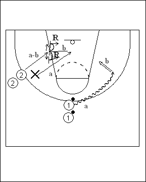

Catégorie : REBOND (Reb-03)
Déroulement
- Deux files de joueurs et un défenseur. Les ballons se trouvent dans la file 1 des meneurs.
- Le premier joueur de la file des meneurs part en dribble du côté opposé (a). Le défenseur X quitte sa position deny et s’ajuste en fonction de la situation du joueur avec ballon. Il arrive donc dans la position pistols (a) sur la ligne des deux anneaux, tandis que le premier attaquant 2 le fait travailler davantage encore en se rapprochant de la baseline. Arrivé sur l’aile droite, le joueur 1 effectue un jump shoot (b), ce qui déclenche la bataille du rebond entre 2 et X.
- Si le défenseur X gagne le rebond, il va dans la file 1 avec le ballon; le premier joueur 2 passe en défense et le shooteur va dans la file 2. Si l’attaquant 2 gagne le rebond, c’est lui qui va en dribble dans la file 1 tandis que X rejoue en défense sur l’ailier suivant; le shooteur va dans la file 2.
Coaching points
- Il s’agit ici du travail du rebond parfois négligé, c’est-à-dire à l’opposé du shoot (pourtant 70% de rebonds de ce côté-là !!!).
- Insister pour que le défenseur X réagisse dès le shoot de 1. Il doit travailler en glissements latéraux pendant la trajectoire du ballon pour se rapprocher de son attaquant.
- Insister aussi sur le bon travail du boxing out du défenseur (front pivot / reverse pivot).
- En cas de rebond offensif, on peut continuer en situation de un contre un.